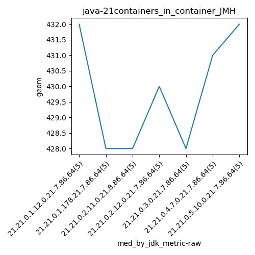

java-21 JMH
Context at bottom
/home/jvanek/git/benchmarks-in-nested-virtualisation-toolchain/final_results/containers_in_container_results/containers_in_container_DACAPO
java-21
JMH
/home/jvanek/git/benchmarks-in-nested-virtualisation-toolchain/final_results/containers_in_container_results/containers_in_container_JMH
java-21
JMH
containers_in_container_JMH
final score
Expected number of java-21 JDKs: 7
1st avgmed_alljdks_metric:
/home/jvanek/git/benchmarks-in-nested-virtualisation-toolchain/final_results/result_processing.py /home/jvanek/git/benchmarks-in-nested-virtualisation-toolchain/final_results/containers_in_container_results/containers_in_container_JMH geom False
values: [432, 433, 433, 430, 432, 428, 428, 427, 429, 430, 426, 428, 430, 430, 427, 430, 430, 428, 429, 431, 421, 430, 428, 430, 427, 425, 428, 431, 431, 432, 432, 433, 429, 430, 432]

Expected number of iterations: 5
final number of values: 35 out of 35
Pass rate: 100.0%
values: (421, 433, 429.42857142857144, 430)

** accuracy from all jdks and runs
more is better
MIN: 421
MAX: 433
AVG: 429.42857142857144
MED: 430
Relative differences 1:
MIN-MAX: 3.0 %
MIN-AVG: 2.0 %
MIN-MED: 2.0 %
MAX-MIN: -3.0 %
MAX-AVG: -1.0 %
MAX-MED: -1.0 %
AVG-MED: 0.0 %
stored to java-21.properties. sort | uniq that!
2nd avgmed_by_jdk_metric:
values: [432.0, 428.4, 428.2, 429.6, 427.2, 429.4, 431.2]

values: [432, 428, 428, 430, 428, 431, 432]

values: (427.2, 432.0, 429.42857142857144, 429.4)
values: (428, 432, 429.85714285714283, 430)

** accuracy from all jdks where runs were avged
more is better
MIN: 427.2
MAX: 432.0
AVG: 429.42857142857144
MED: 429.4
Relative differences 1:
MIN-MAX: 1.0 %
MIN-AVG: 1.0 %
MIN-MED: 1.0 %
MAX-MIN: -1.0 %
MAX-AVG: -1.0 %
MAX-MED: -1.0 %
AVG-MED: -0.0 %
stored to java-21.properties. sort | uniq that!
** accuracy from all jdks where runs were medianed
more is better
MIN: 428
MAX: 432
AVG: 429.85714285714283
MED: 430
Relative differences 1:
MIN-MAX: 1.0 %
MIN-AVG: 0.0 %
MIN-MED: 0.0 %
MAX-MIN: -1.0 %
MAX-AVG: -0.0 %
MAX-MED: -0.0 %
AVG-MED: 0.0 %
stored to java-21.properties. sort | uniq that!
/home/jvanek/git/benchmarks-in-nested-virtualisation-toolchain/final_results/containers_in_container_results/containers_in_container_SPECJBB
java-21
JMH
/home/jvanek/git/benchmarks-in-nested-virtualisation-toolchain/final_results/containers_in_container_results/containers_in_container_RADARGUNs1
java-21
JMH
/home/jvanek/git/benchmarks-in-nested-virtualisation-toolchain/final_results/containers_in_container_results/containers_in_container_J2DBENCH
java-21
JMH
/home/jvanek/git/benchmarks-in-nested-virtualisation-toolchain/final_results/containers_in_container_results/containers_in_container_RADARGUNs3
java-21
JMH
pass rates:
containers_in_container_JMH=100.0%
Context:
- containers_in_container_results
- JMH